Designing enquiry-based learning in visual communication with a design thinking approach
enquiry-learning.com
Project Overview
The School of Design (SD) will be launching a new curriculum in the next cohort as one of its aims is to increase interdisciplinary capacity in design-led innovation and it is vital that students gain knowledge in communication in order to be prepared to engage with different complex problems. SD1103 Communication Basics for Designers used to be a subject that serve for the needs of students to communicate concept graphicly and visually, in which some essential design application such as Adobe suite will be introduce during the class. However, after many years of teaching, our project team has realised that students acquire applied skills based on the needs of their projects and they can easily find answers from the internet, this keeps students not engaging in learning in the classroom. Therefore, if we teach these skills in advance and in a linear sequence, this is not effective and it wastes class time.
Learner-centred curriculum
By adapting an enquiry-based learning and flipped classroom approach, our project team can have the resources to prepare “problem-based projects” for students to work on. In addition, we can pre-arrange relevant skills for them to query during non-class time. In this case, students can have more time to look up skills for their specific projects and instructors can have more time to give advice and help them solve the problems they encounter.
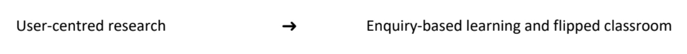
In order to develop more effective content for students, bringing human-centred design into design education can help shape the experience of learning and teaching. Learner-centred curriculum design means giving learners the power to shape their own education through choice. It has similar to the nature of enquiry-based learning and the concept of human-centred design. The design thinking process will therefore be used in the research phase of this project, which will also be a first attempt for the visual communication discipline.
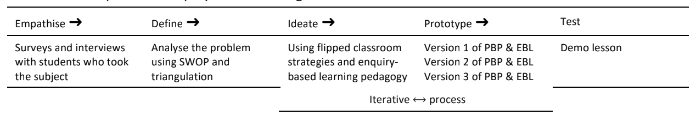
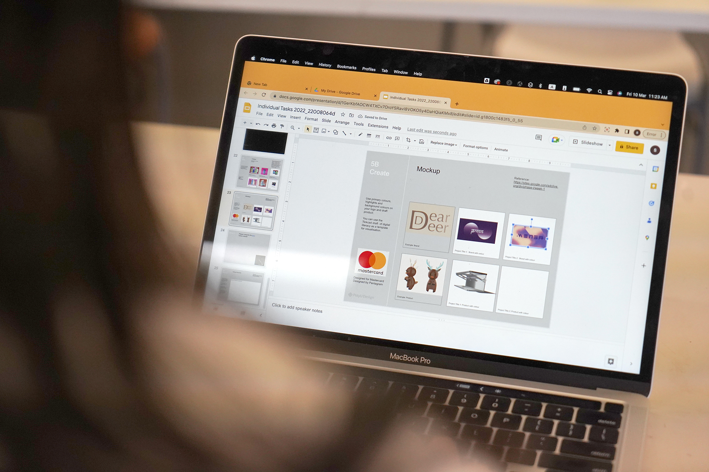
By incorporating problem-based projects (PDP) designed by the project team, it enables students to use a range of lecture and workshop videos from our initiatives and open platforms. With pre-structured learning materials, students can proactively develop their knowledge of visual communication under the guidance of a tutor. The materials produced will be rich in modes of communication and appeal to multiple senses in bringing out its contents. The project explores an alternative to the lecture-based model of teaching visual communication in the classroom. It is a step towards diversifying the teaching and learning strategies in design learning.This project creates an opportunity for up to 20 design student assistants to engage in an in-depth study of threshold concepts and knowledge in the arena of visual communication. Through discussions and interviews with the project team, the student assistants and the first and second year design students, we can, on the one hand, optimise the teaching content. On the other hand, student assistants can use the experience of creating appreciation tasks as a way of giving knowledge transfer.All students of BA Design with an interest in visual communication will be targeted for recruitment. The project will have an impact on participating students' better learning performance and a higher level of learner satisfaction than those in other settings.The learning content and project brief will be open to all design major and elective students via Blackboard. More than 100 students in BA Design will benefit from the project. All students taking the design courses will subsequently benefit from the project through an improved understanding of the skills in graphic communication through inquiry-based learning.The following intended learning outcomes of this project will be used to enhance existing subject learning outcomes: Subject students - Be able to create questions through the process of developing PBP - Obtain supporting evidence and skills to answer the briefing challenge - Connect the explanation to the knowledge obtained from the investigative design process with PBP Student assistants - Be able to transfer their learning experience to teaching methods
 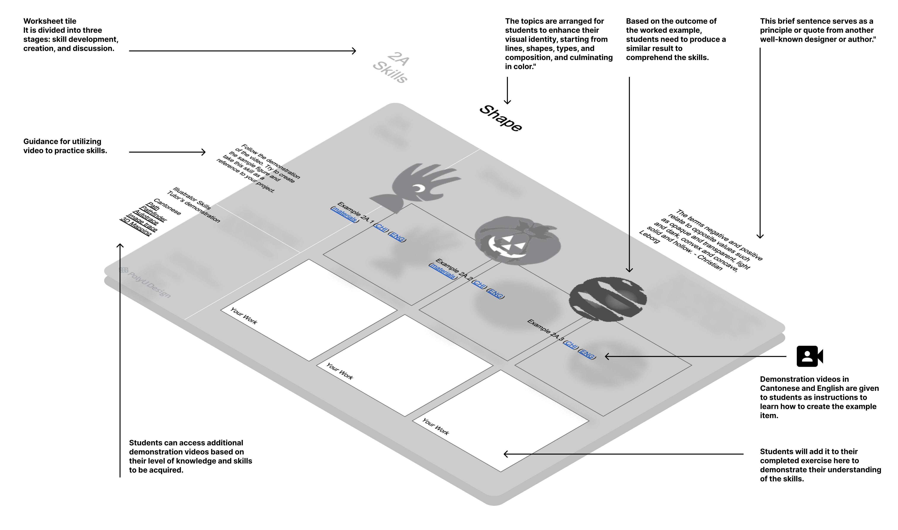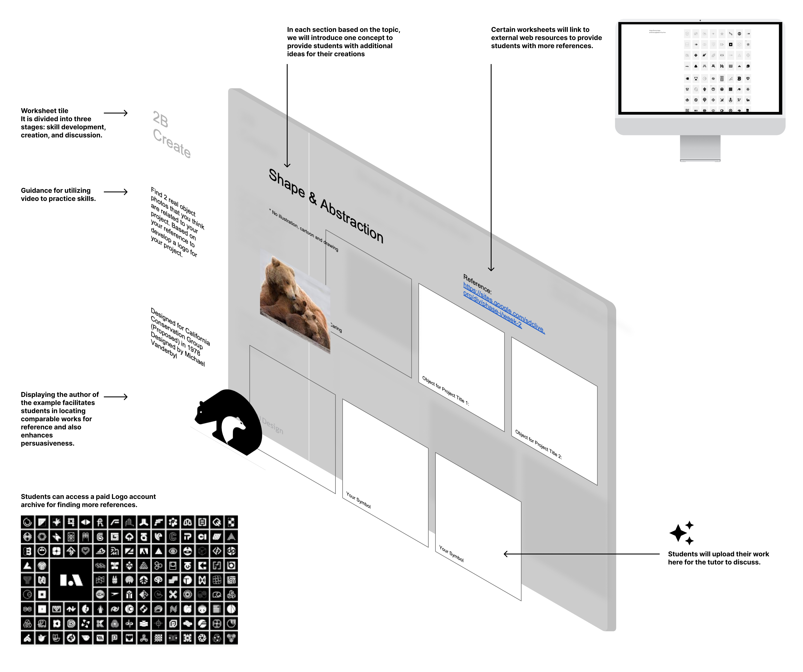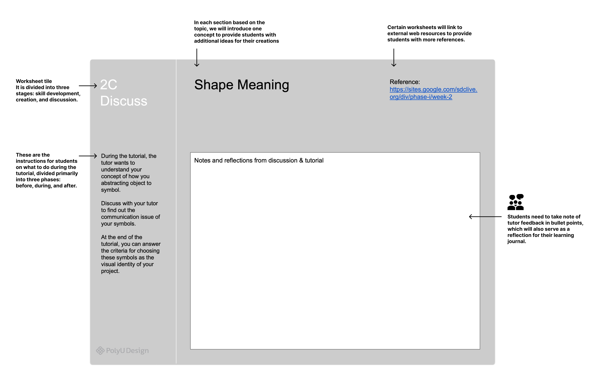
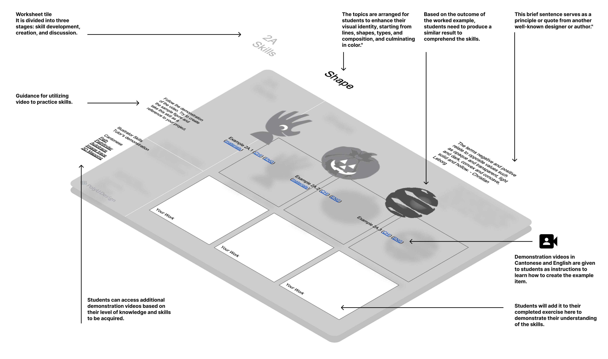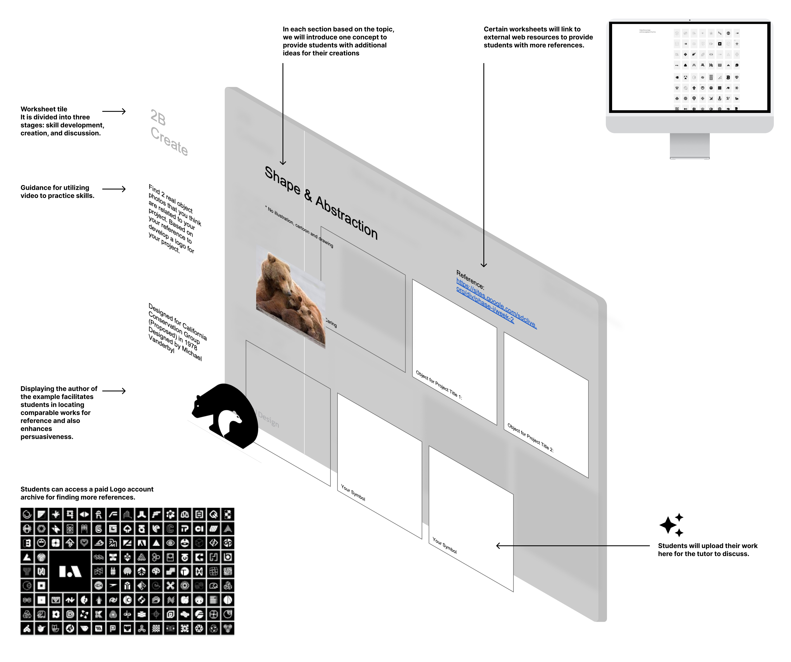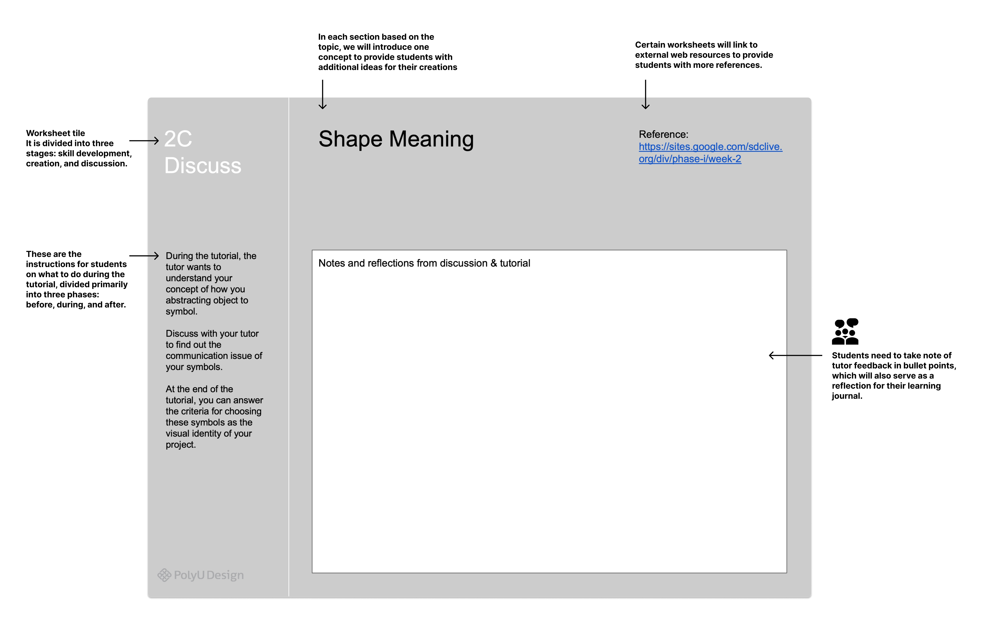 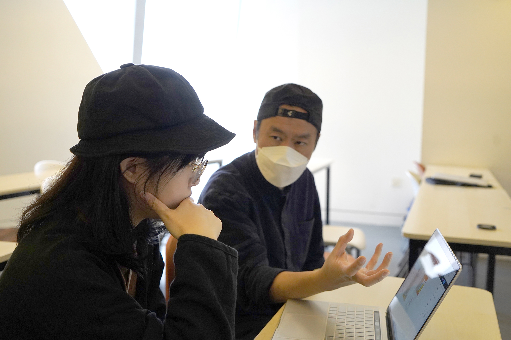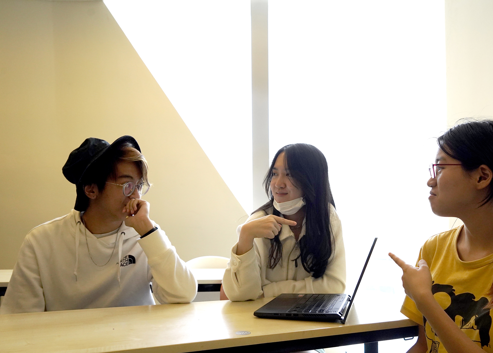
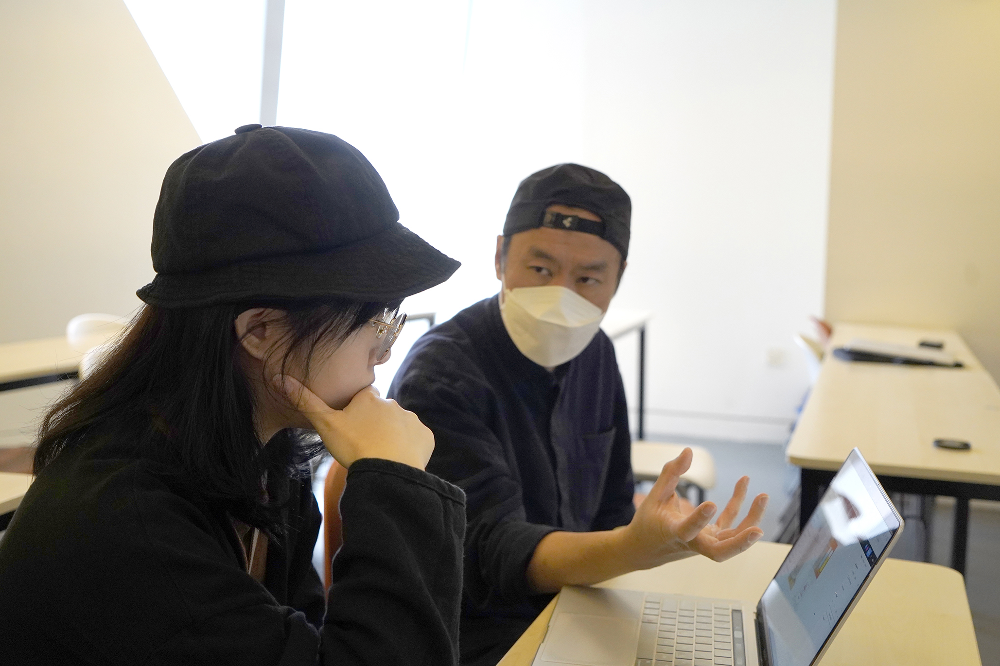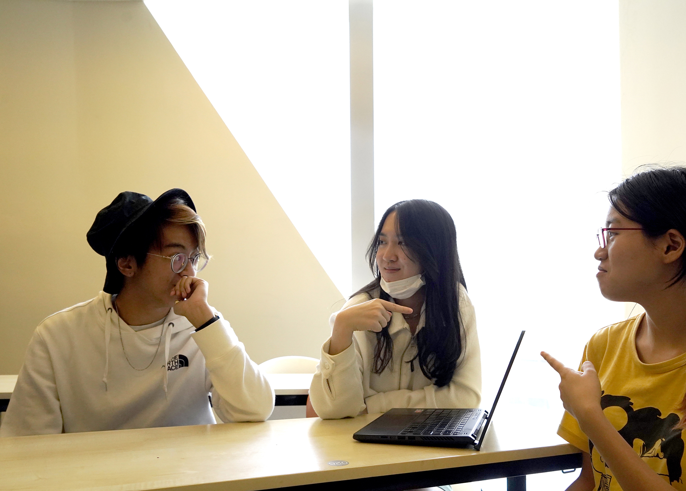